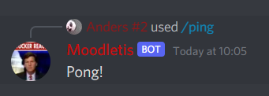
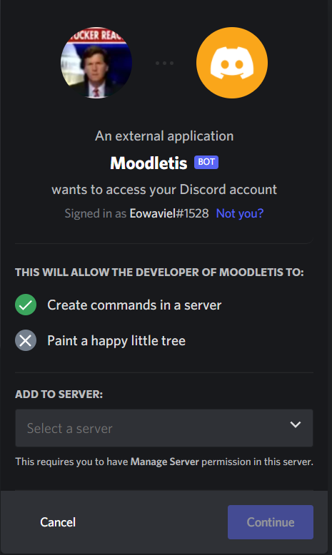

What does the bot do?
Boodle has been made so that it is easier to gain the needed information from Moodle, mostly to gain course information from Moodle to Discord
This is done because many people have discord running in the background, and therefor it is easier to access the material. A picture of what it does can be seen underneeth

To find the bot, and to get it into the correct server, you can click the following button, and a guide to how it is done can be seen later on the page.
After this you just have to login to the discord website that comes up, if you have already logged in you can skip this step, else just follow the guide below.

When you have logged in, a pop up should appear, that allows you to use the drop down menu to decide which server you want it to join
